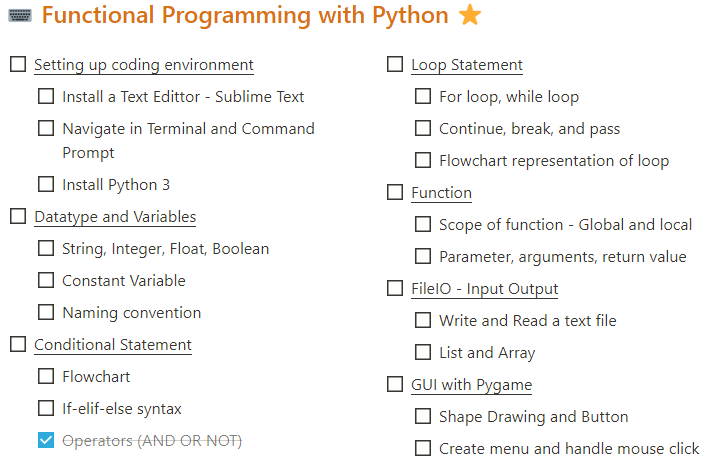
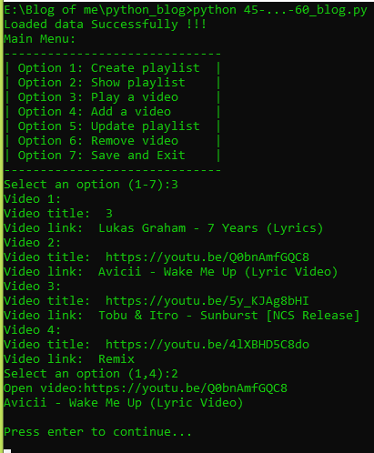
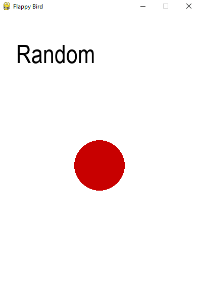
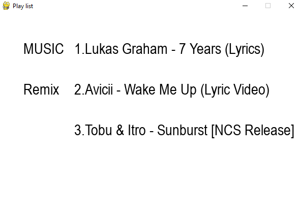

Tóm tắt sơ lược về ngôn ngữ Python
Python (phát âm tiếng Anh: /ˈpaɪθɑːn/) là một ngôn ngữ lập trình bậc cao cho các mục đích lập trình đa năng, do Guido van Rossum tạo ra và lần đầu ra mắt vào năm 1991. Python được thiết kế với ưu điểm mạnh là dễ đọc, dễ học và dễ nhớ. Python là ngôn ngữ có hình thức rất sáng sủa, cấu trúc rõ ràng, thuận tiện cho người mới học lập trình và là ngôn ngữ lập trình dễ học; được dùng rộng rãi trong phát triển trí tuệ nhân tạo. Cấu trúc của Python còn cho phép người sử dụng viết mã lệnh với số lần gõ phím tối thiểu. Vào tháng 7 năm 2018, van Rossum đã từ chức lãnh đạo trong cộng đồng ngôn ngữ Python sau 30 năm làm việc.
Python hoàn toàn tạo kiểu động và dùng cơ chế cấp phát bộ nhớ tự động; do vậy nó tương tự như Perl, Ruby, Scheme, Smalltalk, và Tcl. Python được phát triển trong một dự án mã mở, do tổ chức phi lợi nhuận Python Software Foundation quản lý.
Ban đầu, Python được phát triển để chạy trên nền Unix. Nhưng rồi theo thời gian, Python dần mở rộng sang mọi hệ điều hành từ MS-DOS đến Mac OS, OS/2, Windows, Linux và các hệ điều hành khác thuộc họ Unix. Mặc dù sự phát triển của Python có sự đóng góp của rất nhiều cá nhân, nhưng Guido van Rossum hiện nay vẫn là tác giả chủ yếu của Python. Ông giữ vai trò chủ chốt trong việc quyết định hướng phát triển của Python.
Python luôn được xếp hạng vào những ngôn ngữ lập trình phổ biến nhất.
(nguồn: Wikipedia)
Lộ trình học của tôi

(nguồn: Dung Lai)
- Đây là ngôn ngữ lặp trình đầu tiên tôi học . Tôi chọn học nó là ngôn ngữ đầu tiên căn bản là vì lúc tối bắt đầu học thì nó đang là ngôn ngữ lặp trình phổ biến nhất và còn dễ dùng , đơn giản và thân thiên với người mới . Nhưng cũng có thể được ứng dụng vào nhiều thứ (VD:code game, làm web , lập trình hướng đối tượng , …)
- -Tôi học về python căn bản qua Khóa học Python – Cơ bản đến nâng cao – Dũng Lại Lập Trình link khóa học
- Tôi học xong khóa trên mất khoảng 1 tháng mỗi ngày trung bình dành ra 3-4h để vừa code vừa học , có những hôm thì đến 8h/ngày.
- Bắt đầu từ việc code và chạy chương trình trên terminal , qua những khái niệm cơ bản như str , int , for , while , pass , break , … (Như đã liệt kê ở trên).
- Sau đó đến chạy code bằng thư viện pygame.Chạy những thứ đơn giản.
Python căn bản
Những kiểu dữ liệu (căn bản)
- string "str()" : dùng để gán hay chuyển kiểu dữ liệu sang dạng string
- interger "int()" : dùng để gán hay chuyển kiểu dữ liệu sang dạng interger.Ngoài ra còn có tác dụng làm tròn
- float "float()" : dùng để thể hiện chữ số dưới dạng số thập phân
- boolean "bool" : chỉ dùng để thể hiện hai giá trị True & False .Nếu nó thể hiện False thì sẽ tiếp tục chạy những phần ở dưới còn True thì sẽ dừng lại
Câu lệnh có điều kiện & function (căn bản)
- Câu lệnh "if": thực thi một khối lệnh nếu thoả mãn điều kiện, sử dụng cùng với else và elif (viết tắt của else-if).
- Function : là hàm dùng để làm code tinh gọn hơn.Có thể hình dung nó như 1 cái hộp sẽ sử lí data mà t đưa vào theo trình tự,số lượng mà ta đã code trong function đó.Những data đầu vào còn gọi là các parameter và phải dùng return để trả lại giá trị (Có nhiều cách dùng cững như những ứng dụng của function tùy theo sáng tạo của coder)(Nếu muốn gọi function ra thì ta chỉ cần gán biến với tên function(parameter))
- Class "class": thực thi một khối lệnh và gắn không gian tên cục bộ của nó vào một lớp, để dùng trong lập trình hướng đối tượng.(Trong 1 class có thể có nhiều function con cà có function chạy đầu tiên và duy nhất khi class được gọi là Function __inti__(self) )
Cú pháp (căn bản)
- Câu lệnh gán, sử dụng một dấu bằng =
- Câu lệnh "for": lặp qua một đối tượng lặp được, gán mỗi phần tử và một biến cục bộ để sử dụng trong khối lệnh của vòng lặp.
- Câu lệnh "while": thực thi một khối lệnh chừng nào điều kiện còn đúng.
- Câu lệnh "try": cho phép bắt ngoại lệ được nâng lên (raise) trong khối lệnh và dùng vế "except" để xử lý; câu lệnh cũng đảm bảo rằng phần mã dọn dẹp trong khối "finally" sẽ được chạy dù có lỗi hay không.
- Câu lệnh "def": định nghĩa một hàm hoặc phương thức.
- Câu lệnh "with": bao bọc một khối lệnh bằng một bộ quản lí ngữ cảnh (context manager) (ví dụ như khoá luồng lại trước khi chạy mã rồi mở khoá, hoặc mở một tệp rồi đóng tệp lại), cho phép các hành vi kiểu RAII (sự đạt được tài nguyên là sự khởi tạo) và thay thể cho các câu lệnh try/finally thường thấy.(Hiều 1 cách đơn giản là câu lệnh nào có "with" ở đầu thì sau khi chạy câu lệnh đó và nhwungx phần con của nó nếu có.Thì nó sẽ tự dựng lại)
- Câu lệnh "break": thoát ra khỏi vòng lặp.
- Câu lệnh "continue": bỏ qua lần lặp này và tiếp tục với mục kế tiếp.
- Câu lệnh "pass": đóng vai trò như là một dạng NOP. Câu lệnh này được dùng để tạo các khối lệnh rỗng.
- Câu lệnh "return": trả lại một giá trị từ một hàm hay phương thức.
- Câu lệnh "import": được dùng để nhập các mô đun co các hàm và biến được sử dụng trong chương trình hiện tại.
Những program nổi bật dùng python tạo ra sau 1 tháng

Là 1 program dùng để tạo và chạy nhiều play list video chạy trên terminal .Có thể thêm , bớt , sửa , xóa , chạy , lưu video và thêm playlist Link code của program 1

Là 1 program dùng để random ra màu ở trong vùng tròn (Có dùng thư viện random của python).Khi nhấn vào random nó sẽ tự random ra màu bất kì trong tất cả các màu trong bộ màu RGB Link code của program 2

Là 1 program nâng cấp hơn của program đầu chạy trên terminal.Nhưng chỉ có tác dụng chuyển user đến link của video đã click và chuyển playlist.Ngoài ra không cong gì khác Link code của program 3
Lời kết
Python là ngôn ngữ lập trình đầu tiên tôi học.Nó đã giúp tôi khai sáng về lập trình và tư duy lặp trình,cũng như gia tăng khả năng tư duy logic